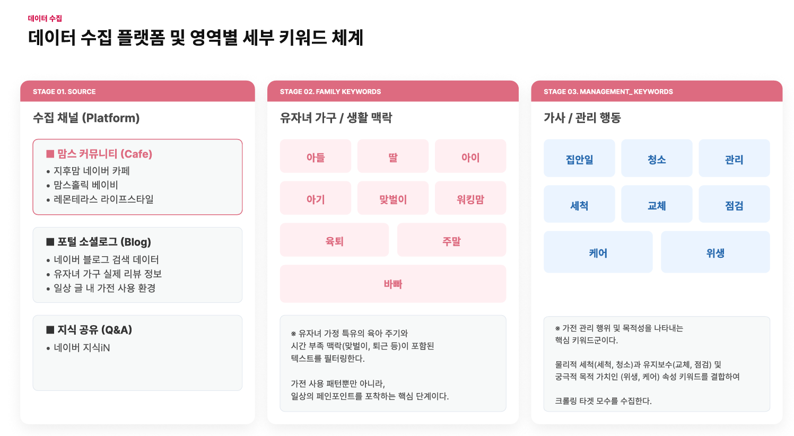
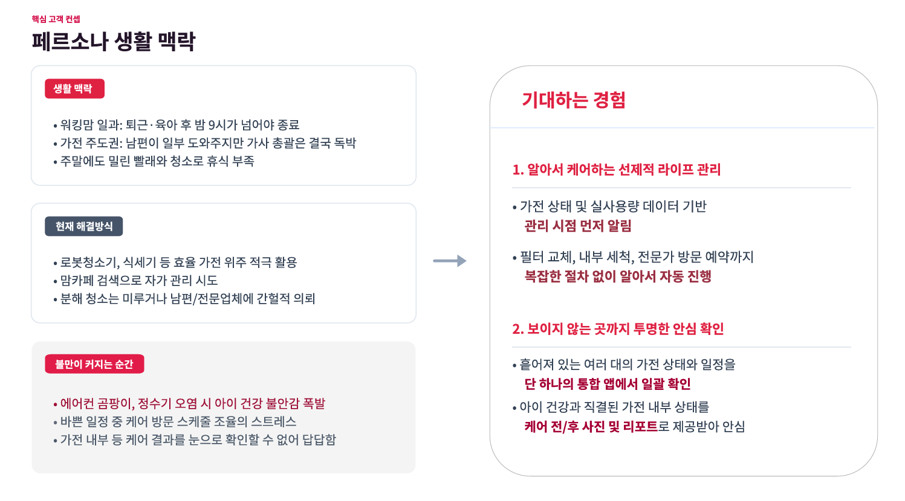

PROJECT 01
LG 케어온
고객 원문 데이터 약 3만 건을 분석하고 도메인 감성사전을 제작해 가전 구독 고객의 불확실성을 구조화했습니다.
PROBLEM
구독 이후의 케어 효과를
고객이 확인하기 어려웠습니다.
가전 구독 결정 이후 케어 과정과 효과를 확인할 수 있는 관리 경험이 부족해, 고객은 구독 비용 대비 효과에 의문을 느끼고 있었습니다.
MY ROLE
흩어진 고객의 목소리를
의사결정의 근거로
웹상의 고객 원문 데이터 조사·분석과 비즈니스 전략 및 고객 경험 개선안 도출을 담당했습니다.
ACTION
데이터에서 불확실성의 구조를 찾았습니다.
조사에서 제안까지, 분석의 각 단계가 다음 판단으로 이어지도록 설계했습니다.
- 01최근 1년 이내 웹상의 오리지널 Raw Text 데이터를 조사했습니다.
- 02약 3만 건에서 청결·케어 관련 반응을 분석했습니다.
- 03청결 관련 감성점수 분석을 위해 도메인 감성사전을 제작했습니다.
- 04불확실성을 케어 과정·시기·전문가 신뢰의 세 영역으로 구조화했습니다.
- 05케어 캘린더, 전문가 정보, 맞춤 안내와 애프터 리포트를 제안했습니다.


3 CORE UNCERTAINTIES
01
케어 과정
어떤 관리가 진행되는지
02
케어 시기
언제 관리받아야 하는지
03
전문가 신뢰
누가 관리하는지
RESULT
최우수
전략 수상
분석을 실행 가능한 고객 경험으로 연결했습니다.
데이터 기반 논리, 도메인 특화 분석, 검증 체계의 완성도를 인정받았습니다.
FEEDBACK
구독 서비스의 USP를 더욱 명확하게 정의하고 데이터 노이즈 정제 로직을 구체화할 필요가 있다는 개선점을 확인했습니다.